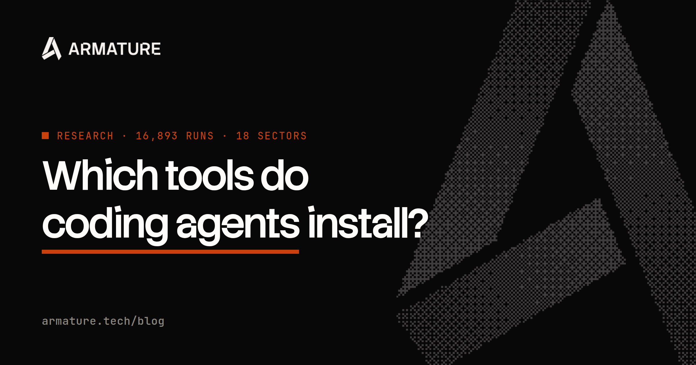
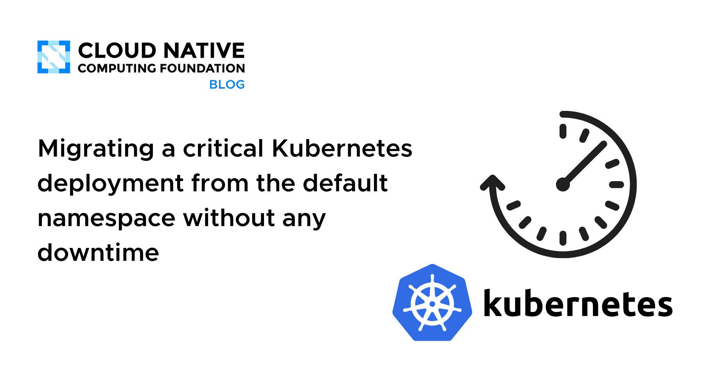
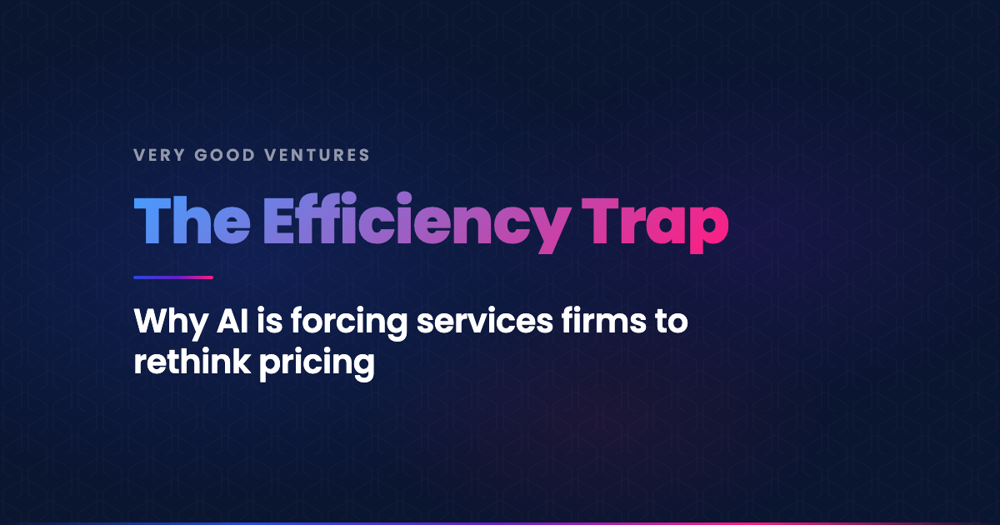
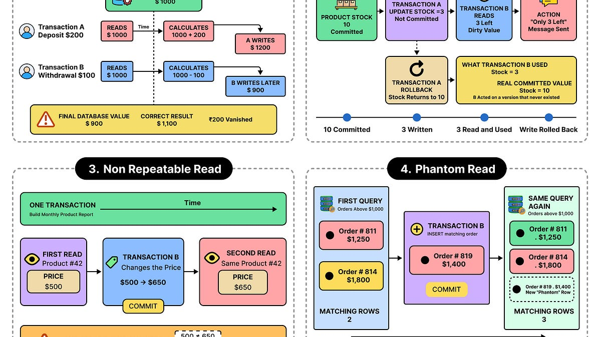
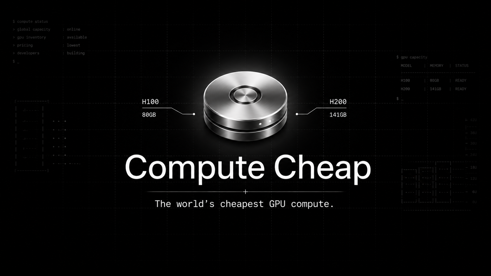

🔥 Top 3 (must read)
Which tools do Claude, Codex and Cursor choose? We measured 17k runs to find out
(HN discussion) Armature ran 17,000 coding-agent sessions and recorded which libraries, test runners, and CLI tools Claude Code, Codex, and Cursor pick on their own. The data shows clear defaults per agent, and some picks differ from what most human teams would choose. Why it matters: if your team uses agents daily, you need to know which tools they will pull into your Node.js or React repo unless you tell them otherwise. Good input for your CLAUDE.md and repo guidelines.

The Pulse: Meta wanted to reduce teams by 60% because of AI
Reuters reported that Meta leadership planned to cut team sizes by 60% because they expected AI to replace much of the work. Zuckerberg later changed course, but the company was left with low morale and a culture that turned mercenary. Why it matters: this is a case study in how an "AI will replace engineers" message damages a team even if the cuts never happen. Useful when you plan how to talk about AI adoption with your own team.

Migrating a critical Kubernetes deployment from the default namespace without any downtime
A step-by-step story of moving a production deployment out of the default namespace while traffic kept flowing. Covers Services, DNS names, secrets, and how to cut over safely. Why it matters: almost every cluster has this problem. The pattern here is a reusable playbook for zero-downtime moves, not just for namespaces.

🛠 Tools & releases
Kubernetes v1.37: DRA Updates
Dynamic Resource Allocation (the API for asking for special hardware like GPUs) gets Extended Resource support in GA, plus more features move to Beta. Relevant if your clusters run AI workloads.
K
🤖 AI for developers
GitHub Copilot app for Beginners: Run several agents at once
how to run parallel agents in the Copilot app, and how to keep control when several agents work at the same time.
GPT‑6 Astra
Simon Willison's first notes on OpenAI's new model. It will be in the OpenAI API and on AWS, priced at $10 per million input tokens, the same as Claude Fable 5 and 5.1.
S
Porting my 1993 Amiga game to Godot, with an LLM reading the 68000 assembly
(HN discussion) — a real example of using an LLM to read old assembly code and rebuild the logic in a modern engine. Good read on how to work with an agent on legacy code.
👔 Engineering & teams
The Efficiency Trap: Why AI Is Forcing Services Firms to Rethink Pricing
Very Good Ventures (a Flutter consultancy) explains how AI made delivery faster and shrank hourly invoices, so they moved to pricing per deliverable. Useful if you work with agencies or plan project budgets.

How Databases Keep Their Sanity with Concurrency Control
ByteByteGo on locks, MVCC, and isolation levels, and the bugs they prevent. Good system design refresher.

🎯 For me
Coding-agent tool study — check which test runners and libraries the agents default to for Node.js and React. Compare with your team's standards and write the gaps into your repo instructions.
Copilot parallel agents — a low-cost way to try multi-agent work on a small task, then compare with Claude Code.
Meta 60% story — an EM lesson on messaging around AI and headcount.
VGV pricing post — comes from a Flutter shop, so the examples map to your mobile work.
💡 App ideas & indie builds
Show HN: The cheapest GPU cloud – H100s at $2.04/HR, H200s at $3/HR
(HN discussion) — a price-first GPU rental site. User problem: GPU compute is expensive and prices are hard to compare across providers. Inspiration: a simple "cheapest option" aggregator in any market with confusing pricing can be a full product on its own.

🎓 Try this
Open the GitHub Copilot app and run two agents in parallel on separate small tasks in one repo, for example one writing a Playwright test and one fixing a lint issue. Follow the GitHub guide and note which tools each agent installs, then compare with the Armature study.